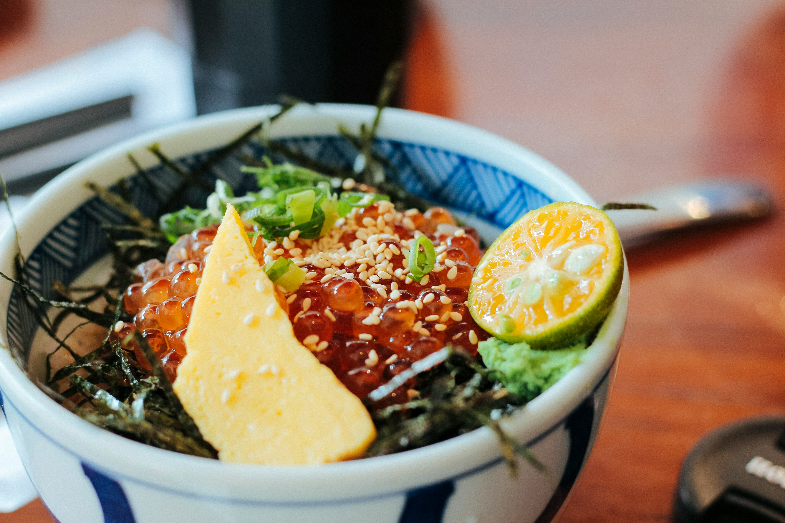
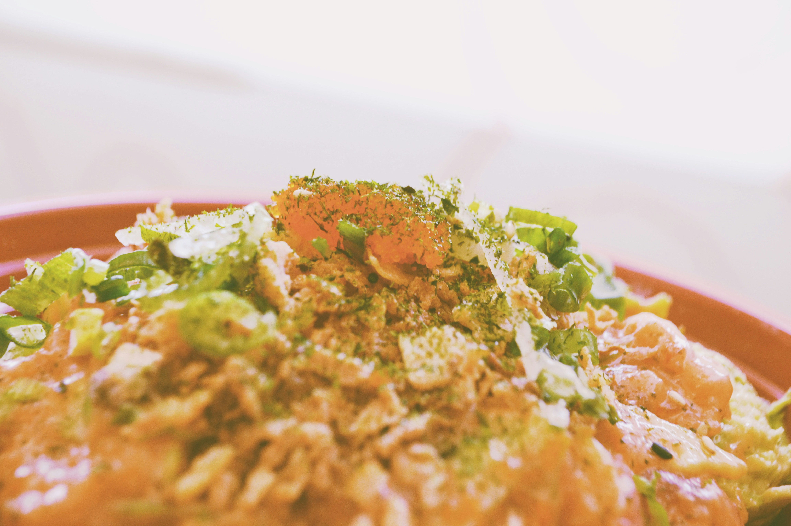

Bulgogi Don
Bulgogi is a popular korean dish of thinly sliced meat.

Spicy Ramen
Japanese dish featuring spicy, creamy, rich ramen noodles with meat.

Spicy Tuna
A dish served with spicy tuna and rice.